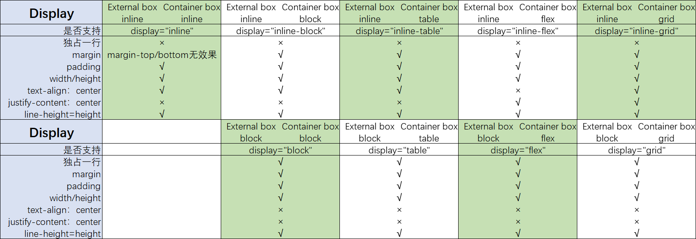
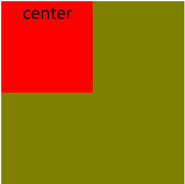

目录
1、display展现
dispaly："none | block | inline | inline-block | list-item | run-in（主流浏览器不支持） | table | inline-table | table-row-group | table-header-group | table-footer-group | table-row | table-column-group | table-column | table-cell | table-caption | inherit"；（不会显示 | 块级元素，前后带换行符 | 内联元素，前后不带换行符 | 行内块元素 | 列表 | 如果display:run-in的box后面跟着一个display为block水平的box，那么这个应用了display:run-in的box将会变成display:inline属性，同时内容嵌入到后面的display为block的box中；否则这个display:run-in的box维持其本身的block属性。即当前元素跑-进(run-in)后面的元素 | 块级表格，前后带换行符 | 内联表格，前后不带换行符 | 类似 <tbody> | 类似 <thead> | 类似 <tfoot> | 类似 <tr> | 类似 <colgroup> | 类似 <col> | 类似 <td> 和 <th> | 类似 <caption> | 继承）
每个元素都有两个盒子，外在盒子和容器(container)盒子（内在盒子）
display："inline"（"inline-inline"）；
display："inline-block"（"inline-block"）；
display："inline-table"（"inline-table"）；
display："inline-flex"（"inline-flex"）；
display："inline-grid"（"inline-grid"）；
display："block"（"block-block"）；
display："table"（"block-table"）；
display："flex"（"block-flex"）；
display："grid"（"block-grid"）；
2、float浮动
float："none | left | right | inherit"；（不浮动 | 左浮动 | 右浮动）
内容
1、display展现
1.1概念：每个元素都有两个盒子，外在盒子和容器(container)盒子（内在盒子），外在盒子负责元素是否独占一行（inline：不独占一行，block：独占一行），容器盒子负责宽度、内容呈现（内联、块、表格、flex、栅格）
将元素的display设置为gird时，该元素即为grid container（网格容器），其子元素直接成为grid items（网格项）

注意：text-align：是针对文本对齐的方式，对内联元素起作用，而对于块级元素不起作用，具体表现为文本居中，元素不居中，如下图：
CSS Code
div{
width: 200px;
height: 200px;
background: olive;
text-align: center;
}
p{
width: 100px;
height: 100px;
background: red;
text-align: center;
}HTML Code
<div class="parent">
<p class="child">center</p>
</div>Result

2、float浮动
float："none | left | right | inherit"；（不浮动 | 左浮动 | 右浮动）
待阅读完CSS世界补充